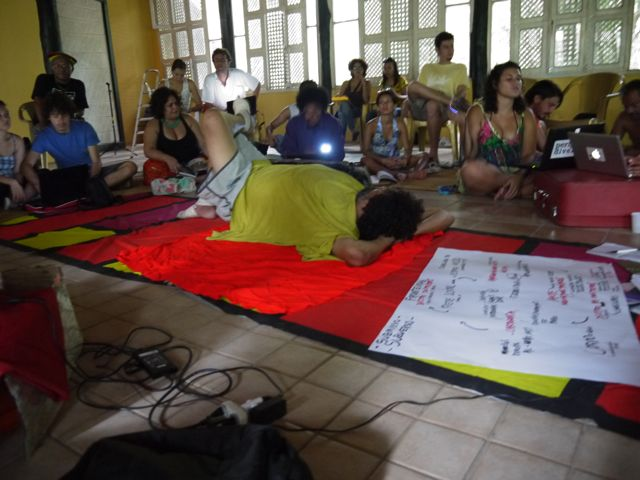

Bye Bye Brasil, de Carlos Diegues
O dossiê aborda questões políticas, debates e ações em um território historicamente complexo - a Amazônia brasileira. Esta documentação é o resultado de um processo que juntou uma rede de pensadores, ativistas, artistas e organizações para discutir arte e tecnopolíticas relacionadas a esse território. A série consiste em uma publicação impressa e digital, vídeos remixados (RMXTXturas), um mapa (MapAzônia) que nos sinaliza fatos importantes sobre os 60 anos do Plano de Desenvolvimento Nacional para a Amazônia brasileira.
Os vídeos fazem parte do processo de trabalho que resultou em um mapeamento interessado em reconhecer uma realidade local e espacial, compartilhando visões e perspectivas globais, a partir de tecnologias móveis, digitais e, principalmente, possíveis/acessíveis. Cada capítulo da publicação tem um remix de vídeo correspondente, a "remixtexturas" sai de nossas memórias midiáticas de infância:
1. Prólogo: Perigoso e Divertido - trata do nosso processo de trabalho nas reuniões imersivas de 2011, incluindo pesquisa e edição colaborativa; 2. Vontade de Poder - é sobre mapas, cartografia e territórios de poder; 3. Estamos em greve - discute o estado e a natureza da arte, cutucando as feridas abertas da região; 4. Redes Locais e Autonomia - apresenta as tecnologias sociais e digitais que transmitem conhecimento e garantem o empoderamento; 5. Epílogo: entre rios, ruas e córregos da Amazônia - um passeio poético de ancestralidade e tradições de como conviver sob o ponto de vista quente e úmido.
A produção foi poderosa ao estimular o pensamento crítico e criativo em grupos, aprendendo juntos processos de cartografias e pedagogias radicais locais, no Brasil e na América Latina, revelando outras formas possíveis de agir contra os discursos hegemônicos. Tivemos a oportunidade de rever a visão imagética romantizada da floresta e dos rios, lembrada nos filmes e arquivos documentais sobre a região, entre tantas referências presentes em nossa memória. Ao contar e ouvir as experiências do grupo, montamos uma teia de situações e fatos que contam nossa história. Ao final, editamos uma coleção de documentos, como um dossiê proposto para ser lido e assistido, um laboratório hacker, decodificando referências do que a alta tecnologia significa para nós. Baixa tecnologia é alta tecnologia.
Ver-O-Peso, de Max Martins